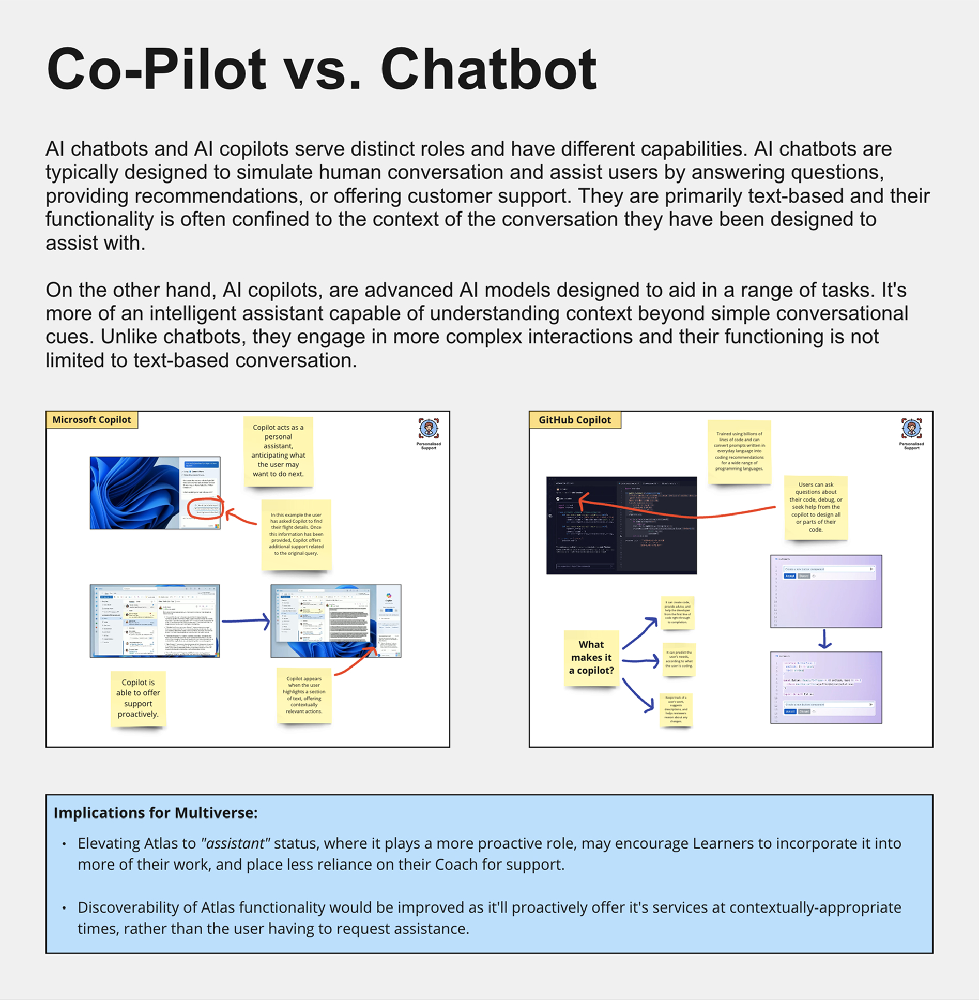
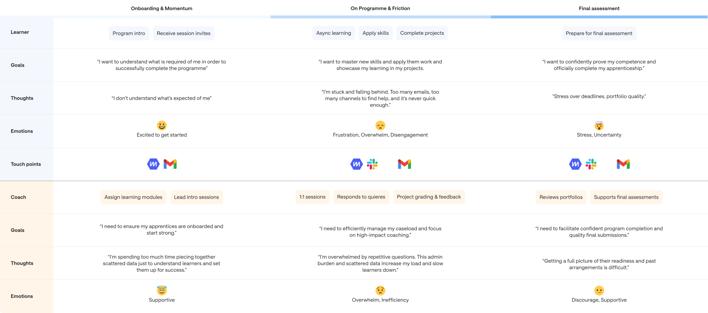
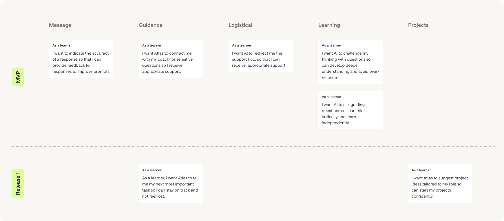
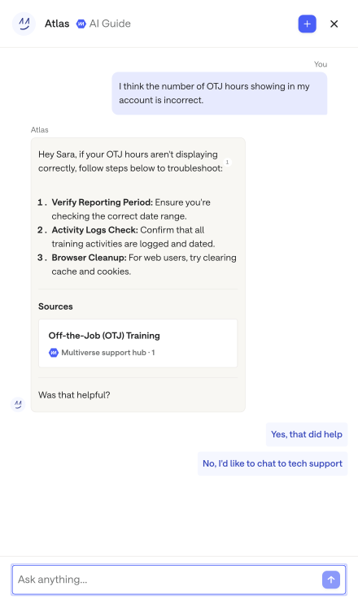
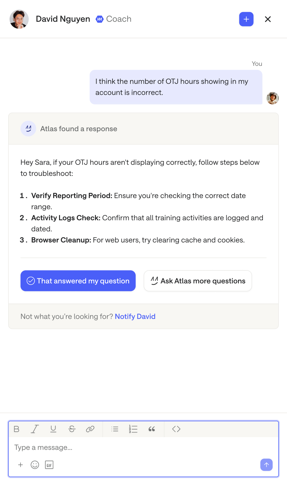
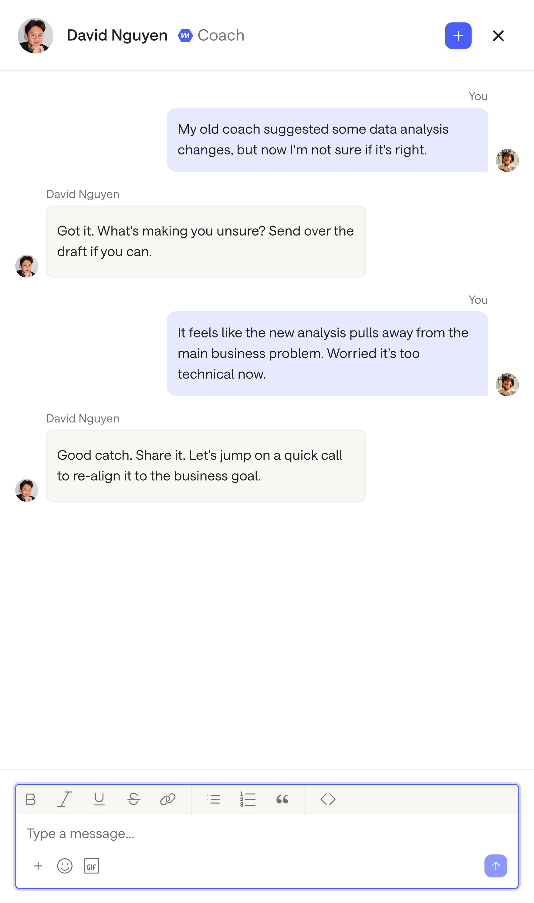
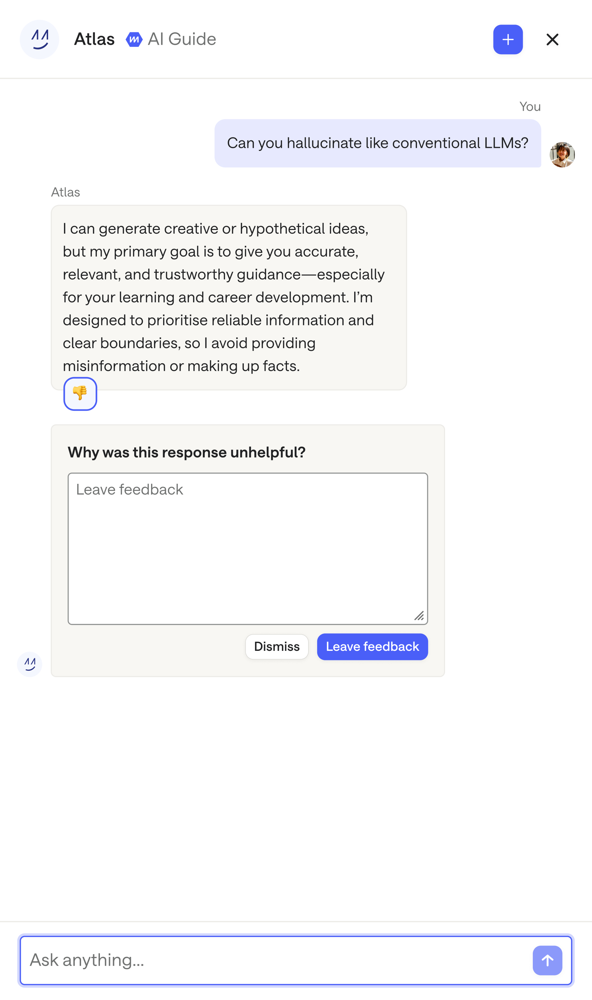

Problem
There was a critical gap in providing timely, scalable, and personalised support to thousands of learners.
Learners
Often felt lost or unsupported when studying independently, struggling to find answers across various systems and channels. They experienced frustration and delays, even for simple or urgent questions, which hindered their progress and confidence.
Coaches
Were overwhelmed by growing caseloads and a high concentration of complex, ad-hoc 1-1 coaching requests. They spent time answering routine questions that Atlas could handle, slowing down learners and increasing coach load.
Opportunity
How mighy we scale personalised, on-demand support for every learner, enabling them to move forward independently while empowering coaches to focus on their most impactful work?
Goal
Improve learner outcomes while reducing coach time per learner. We set three targets for Atlas users:
>85%
apprenticeship pass rate
20%
reduction in coach queries
5%
higher learner retention
Shaping the brief
Leadership wanted to launch the boldest part of our long-term vision first. This was an agentic, always-on Atlas in a guidance side-panel that read a learner's context and offered support proactively.
I pushed back, as Atlas needed a foundation of proven features and evidence it could deliver. An always-on panel that promised agentic help and under-delivered would damage the product's credibility. I proposed we should prove the core features and product-market fit first, then iterate towards the side-panel. Leadership agreed. We shipped and validated the foundation, and the agentic version followed later.
Approach
I set the product-market-fit vision and strategy with the product trio and our product director, then ran a lean build-test-learn sprint with close UXR partnership to get something testable quickly.
Because AI was new, I worked with UXR on a research roadmap tracking AI advances and shifting consumer expectations, so we solved problems in an AI-first way and avoided building features that AI vendors would soon build natively.
I also led the information architecture for how Atlas would work, and use data, across multiple products on the platform.

Discovery
I focused on where learners got stuck, usually around next steps or an unclear concept. Support logs showed coaches answering the same questions from learners related to what they should do next to succeed. I used AI to analyse user research findings, support logs, and coach conversations into insights.

Mapping product–market fit
I used the Value Proposition Canvas to map Atlas against real learner needs. From our research I built a profile of the jobs learners were doing, the pains slowing them down, and the gains they wanted, then designed Atlas to address them directly.
Solution
I framed Atlas as a guidance layer woven into the learning experience, not a standalone chatbot, which shaped when and how it should show up. We launched Atlas Chat and Spotlight, designed around three how might we questions.

How might we
Provide instant, contextual, and non-judgmental support
Problem
Learners got stuck mid-task and couldn't get help fast enough, with answers scattered across Slack, WhatsApp, and email.
Hypothesis
We believe that giving learners instant, grounded answers in one place, with a coach handoff when needed, will help them get unstuck quickly without waiting.
Designs
Learners message Atlas for clarity on a concept, getting help, or how to apply a skill. Answers are grounded in our own material with sources shown, and Atlas hands over to a coach when a question needs more than information. It also catches questions directed at a coach that it can answer itself.


Impact
79%
monthly active adoption (target 75%)
85%
helpfulness (target 80%)
28%
reduction in routine coach queries (target 25%)
How might we
Guide learners to their next step
Problem
Learners often didn't know their most important next task and felt lost, while coaches answered the same “what should I do next?” question on repeat.
Hypothesis
We believe that a guidance panel with Atlas-recommended next steps will help learners stay on track and feel less lost.
Designs
Atlas surfaces the single most important task on the learner's home page, tied to real deadlines and live sessions, highlighting the priority so progress doesn't depend on knowing the right question to ask.
Impact
81%
module completion (target 75%)
28%
contribution to the reduction in routine coach queries
How might we
Help learners deliver relevant projects
Problem
Learners struggled to scope an apprenticeship project relevant to their role, unsure how to turn learning into impactful work, which stalled project starts and weakened submissions.
Hypothesis
We believe that Atlas generating personalised, role-relevant project ideas, learners will start projects with greater clarity, leading to more impactful submissions.
Designs
Atlas runs a short guided conversation to shape an idea around the learner's actual role and business goals, returning a brief with the problem, deliverable, and a realistic plan that the learner owns and can refine.
Impact
51%
of projects used Atlas ideas (target 40%)
72%
early submission (target 70%)
4/5
project quality (target 4.0/5)
Challenges
Over-reliance
An assistant that answers everything trains dependence and undermines the learning itself. On conceptual problems Atlas asked guiding questions and nudges like “what would you do next?” rather than giving them the answer, and flagged learners who looked stuck.
Hallucinations
A confident wrong answer is expensive in a learning product. System messages used verified knowledge-base data, we collected and analysed data from coach conversations, and we refined responses through ongoing evaluations.
Safeguarding
Atlas triaged safeguarding issues and routed learners to human support, handing off to a coach with an AI-generated summary so they didn't have to re-explain. Personal data was never shared outside for model training.


Outcome
Boosted learner outcomes and cut coach time.
89%
pass rate for Atlas users (vs 85%)
−28%
reduction in coach queries
+7%
higher learner retention
1.5M
questions sent to date
94%
say Atlas is helpful
4.43/5
usefulness
4.17/5
accuracy
8.17/10
satisfaction
"It helped me solve 90% of my issues without having to wait."
Multiverse learner
"It's like having support in your back pocket."
Multiverse learner
Reflection
Design leads alignment
We had to shift the focus from building a chatbot to solving real learning problems. Risked delivering novelty instead of value.
Safeguarding is a UX problem
We embedded risk escalation paths and built graceful fallbacks that encouraged learners to speak to a coach when uncertainty was high.
Trust mattered more than the technology
Learners didn't care that Atlas was AI. They cared that it felt personal, relevant, and trustworthy.